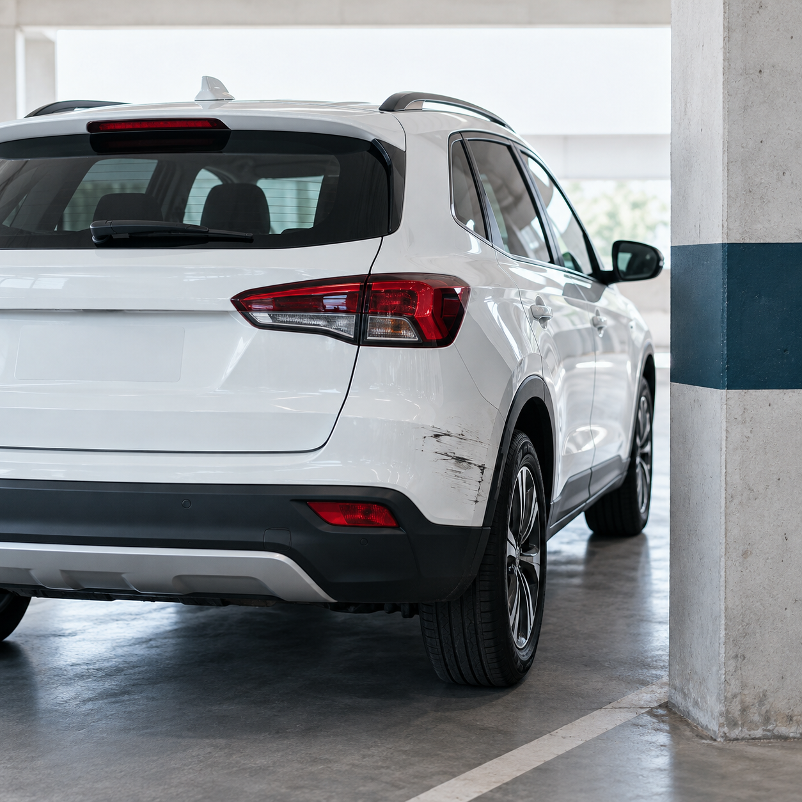

ความเสียหายต่อรถของคุณ
จากอุบัติเหตุ มีหรือไม่มีคู่กรณี
คุ้มครองความเสียหายต่อรถของคุณจากการชน การเฉี่ยวชน การพลิกคว่ำ การตกถนน รวมถึงเหตุการณ์อื่นที่เกิดขึ้น เช่น เสา รั้ว หรือกำแพง ไม่ว่าจะมีคู่กรณีหรือไม่มีคู่กรณี โดยเป็นไปตามเงื่อนไขของกรมธรรม์
ตัวอย่างเหตุการณ์
ถอยรถแล้วชนเสาในลานจอดรถ รถได้รับความเสียหาย สามารถแจ้งเคลมได้ภายใต้เงื่อนไขของกรมธรรม์ บริษัทจะพิจารณาตามข้อเท็จจริง ความคุ้มครอง และความรับผิดส่วนแรก (ถ้ามี)

เกิดได้เสมอ
แต่คุณไม่ได้เผชิญลำพัง